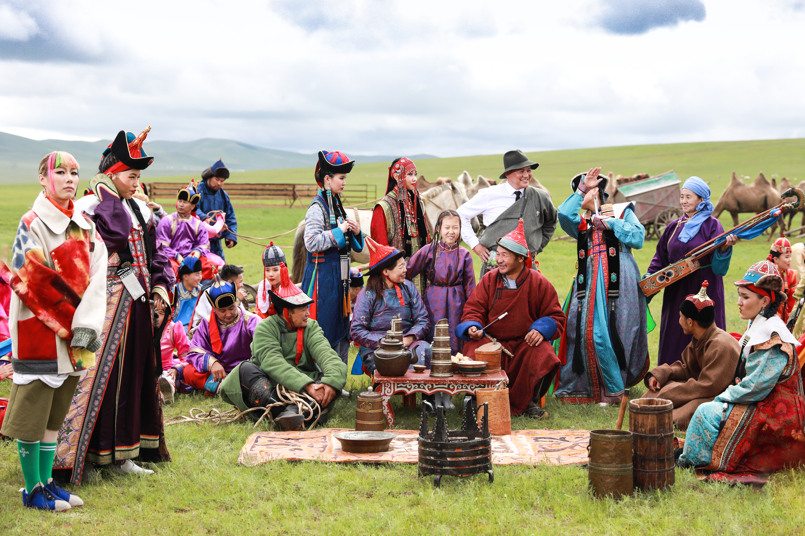
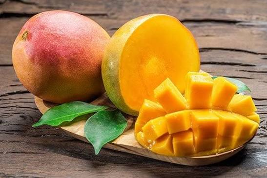

the 2 word mango and mongol are very similar in the way they sound. when i first started to learn english i would always confuse the two words. mango mongol mongol mango, try to say that 10 time fast as you can i bet you would mess it up as well! one you eat one you run away from in the middle ages. i dont know why am doing thoese 2 but now i am hehe.
did you know mango dont grow in mongolia? and mongolia is a country that is very cold and dry. and mango is a fruit that grows in warm and wet climate. but did you know that during the silk road trade mongols most likey have eaten mangoes? because the silk road trade was a trade route that connected asia and europe. and mongolia is in asia and mangoes are from india. so it is very likely that mongols have eaten mangoes during the silk road trade.
| hmmmmmmmm | Type |
|---|---|
| food | people |
| mango | food |
| mongol | people |

